The 'Acquire' Dialog
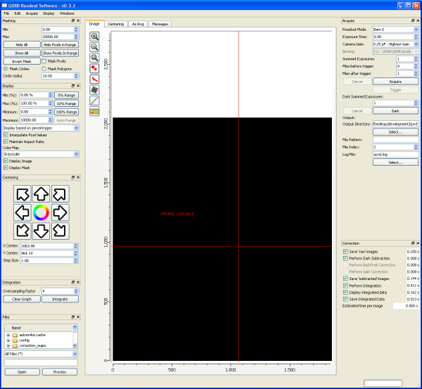
|
|
|
The 'Acquire' Dialog |
The acquire dialog is where you enter parameters related to the basic acquisition operation. The result of an individual acquisition operation consists of a sequence of image files, each containing the sum of a number of individual exposures. The 'Exposure Time' control lets you specify the individual exposure (or integration) time. You can choose from a set of 8 pre-set exposure times by clicking the up and down arrows, or choose an arbitrary exposure time by typing values directly into the text box. The maximum 'supported' time for the Exposure Time is 5 seconds, but you may find that (depending on which model of detector you have) you can specify longer exposure times, perhaps as high as 8 seconds.
The 'Camera Gain' control specifies the analog gain of the camera readout electronics, the highest gain setting is probably the one to choose here. If you have strong signals and want to perform long exposures it may be advantageous to reduce the analog gain to avoid saturating pixels.
If you change the exposure time or camera gain you should always measure a new 'dark' image.
The 'Binning' control is intended to allow you to choose between various binning options for the images - it doesn't work yet, however.
The 'Skipped at Start' control lets you specify a number of exposures to skip at the start of a readout sequence. This is mainly needed because the operating mode of the detector is such that it is continually reading out all the time (as you should see from the updates to the 'Avg. Value' control). When an acquisition operation is started the detector readout timing is not adjusted, the software just starts to accumulate the data that is being acquired in any case. The upshot of this is that the first exposure in a sequence will include a partial exposure from before the start of the acquisition. In the case where you are taking a sequence of images with the shutter open this may not be a problem and it should be okay to set a 'Skipped at Start' value of zero. Alternatively, set 'Skipped at Start' to one and the acquisition will skip the frame that was being exposed when the acquire operation was started. The program automatically sets 'Skipped at Start' to one when dark frames are measured.
The 'Summed' control lets you specify the number of individual exposures to add together into each saved file. If you choose a 'Summed Exposures' value of 1, then the individual raw images are saved as 16 bit integer TIFF files - about 8MB each. If you choose a larger value for the summed exposures the raw images will be saved as 32 bit integer TIFF files - about 16MB each. The choice of data types implies that you can sum as many as 65535 exposures without losing information - this should be sufficient for all reasonable circumstances!
The 'Skipped' control lets you specify a number of exposures to skip between each acquired file. This is something like a 'time-lapse' control for amovie camera.
The 'Phases in Group' control lets you perform 'synchronized' acquisition operations. If you enter a value greater than one then the acquisition operations are modified to acquire 'groups' of images - and during each group acquisition an external hardware signal may be used to drive an external ramp voltage. More information is given in the 'Synchronized Acquisition' section below.
The 'Pre Trigger' and 'Post Trigger' controls are used to specify the number of image files to save. In most cases you won't want to use the 'Trigger' option so you should set the 'Pre Trigger' control to zero. In this case acquisition and image saving will start as soon as you press the 'Acquire' button and will continue until 'Post Trigger' images have been saved. If 'Pre Trigger' is non-zero then the acquisition is a little different - acquisition starts immediately but summed image files are not saved to disk, only to the computer memory. Only the most recent 'Pre Trigger' images are saved in this way but acquisition will continue by discarding earlier images from memory. To start saving files, click on the 'Trigger' button. At this point the pre-trigger images will start to be saved to disk, and an additional 'Files After Trigger' images will be acquired and saved to disk.
After each frame is captured the average value is calculated and displayed - this is useful to show if the readout has stabilised after changing exposure time or camera gain.
The 'Dropped Frames' counter keeps track of how many frames were dropped because the computer was unable to process data sufficiently quickly. Ideally, the dropped frames counter should stay at zero, but if you have an exceptionally slow disk, or try to perform too much processing - you may see the dropped frames count increase. If this happens, either increase the exposure time, or turn off some superfluous processing option, or increase the amount of image memory in the "Preferences..." dialog. There is a memory usage indicator at the bottom right of the main window which shows the amount of available image memory during operations.
'Dark Summed Exposures' controls the number of exposures to add together for the 'Dark' image. The individual exposure time is controlled by the same controls used for the Acquire operation. The number of exposures for a dark exposure need not match that used during acquisition - the values will be scaled appropriately.
'Output Directory' displays the path to the directory where data files will be saved, to change to a new directory click the 'Select..' button and choose a new output directory.
The 'File Pattern' and 'File Index' controls are used to specify the file names used to save files. The actual file names used to save a file will be of the form "<filePattern>-<fileIndex>.tif", "<filePattern>-<fileIndex>.dark.tif" or "<filePattern>-<fileIndex>.raw.tif". The file index is automatically incremented each time an image is acquired. QXRD will never overwrite an exisiting file - if this is attempted the new file will be saved with a name along the lines of "<filePattern>-<fileIndex>-<duplicateIndex>.tif" where duplicateIndex will be incremented from one until a unique file name results.
The 'Log File' indicator displays the path name to a 'log' file which will contain all the messages that appear in the 'Messages' tab, together with the results of any slices and/or integrations of the images. Click 'Select...' to choose a different log file. The log file format is basically the same format as that used by 'spec'.
Click the 'More Options...' button to open the main qxrd preferences dialog and enter more acquisition-related options.
| 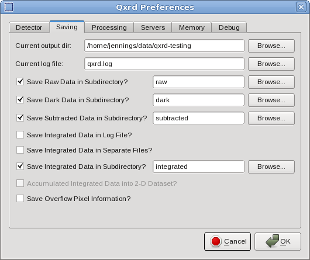 |
|
The 'Acquire' 'More Options...' Dialog |
The main extra options allow you to specify that the various kinds of acquired and processed data should be saved in subdirectories of the main output directory. You can also control the way integrated data are saved, and also control whether a list of 'overflow' pixel positions is calculated for each acquired image.
| 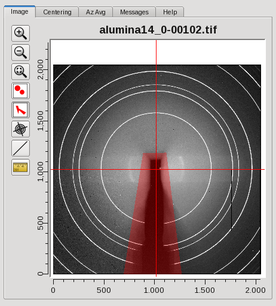 |
|
The 'Image Display' Tab |

|
|
The 'Correction' Dialog |
The 'Correction' dialog is used to control which of the available automatic processing steps are performed when images are acquired. Alongside each step is an estimate of how long it is likely to take, averaged over the last 10 or so images - you can use these estimates to determine if you may need to skip some processing steps in order to maintain the desired acquisition data rate.
The estimated times are measured when you run an acquire operation and a running average value is displayed in the panel. Do an acquisition of 20 or so images to get decent values for the timings. The timings may depend on other application parameters - for example the 'Oversampling Factor' strongly affects the integration time. The estimated time per image attempts to allow for the number of CPU cores being used simultaneously, but may not be a very accurate estimate.
Be careful which steps you choose to omit - you probably don't want to perform measurements where nothing is saved, so you'll probably want to keep at least one of the 'Save' steps. A safe choice would be to choose all steps except the "Save images as text" step - this should give a total processing time of about 0.5 seconds. The best choice for rapid data acquisition would be to save the 'raw' images and nothing else - you would then do the dark subtraction and integration in subsequent analysis.
With a fast computer and fast disks it should be possible to acquire, save and integrate data at the maximum frame rate of 15 frames/second.
| 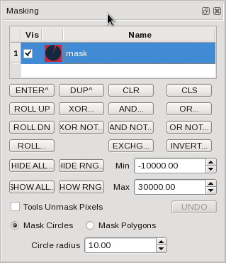 |
|
The 'Masking' Dialog |
The masking dialog may be used to control which pixels are used and which masked out in various processing steps. The program implements a 'stack' of mask images - the topmost of which is used as a maks for processing options. The upper panel in the masking dialogs represents the mask stack. Each entry in the mask stack is displayed as a miniature thumbnail image - red areas are masked out.
Below the mask stack display is an array of buttons that implement a variety of masking operations. Buttons whose label ends with dots ("...") will pop up a menu to let you select which stack entry to work on - other buttons act either on the stack as a whole, or on the top element only. If you hover the mouse pointer over a button you should see a description of its actions.
Below the calculator buttons are a few controls that control the behavior of the two masking tools in the image window. 'Tools Unmask Pixels' controls whether using the masking tools causes pixels to be 'masked' (i.e. excluded from processing, or 'painted' red) or 'unmasked' (i.e. included in processing). 'Mask Circles' and 'Mask Polygons' basically duplicate the behavior of clicking the corresponding tool in the image window. 'Circle Radius' is used to set the default circle radius for the circle mask tool in the image window. If you click and release the circle mask tool you will mask a circle of this radius - if you click and drag the circle mask tool you mask a circle of a corresponding radius.
| 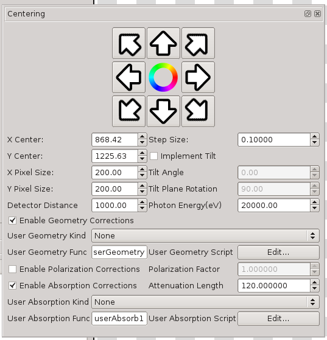 |
|
The 'Centering' Dialog |
| 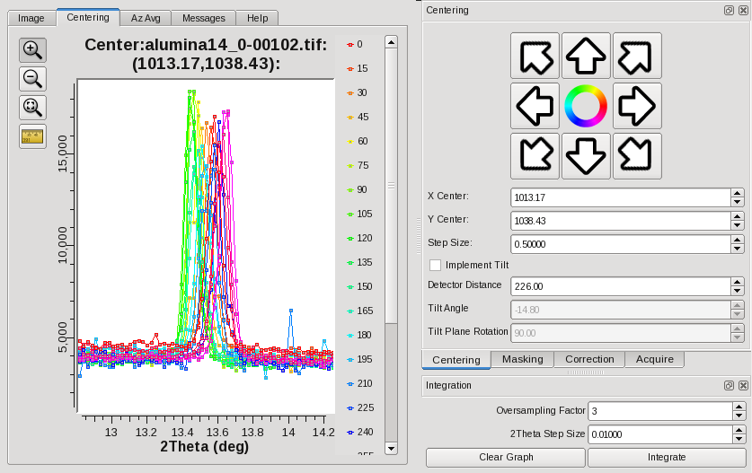 |
|
Finding the center |
| 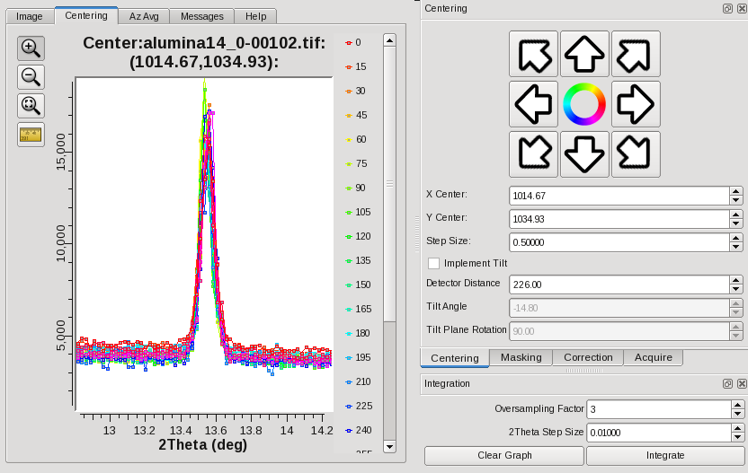 |
|
Found the center |

|
|
The 'Integration' Dialog |

|
|
Plot of integrated data |
| 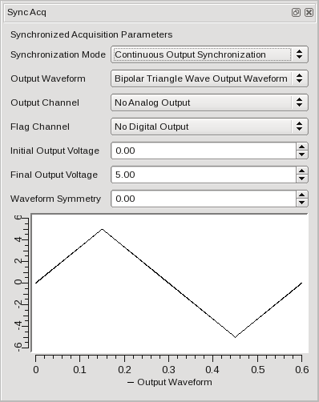 |
|
The 'Display' Dialog |
| 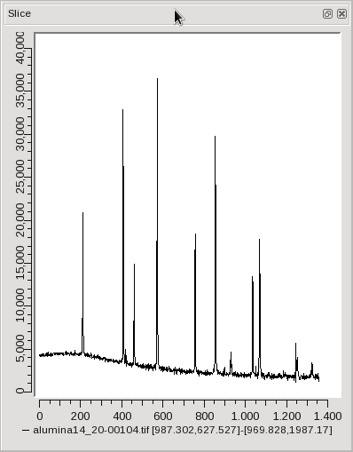 |
|
The 'Slice' Dialog |
| 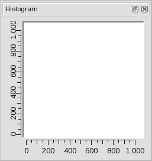 |
|
The 'Histogram' Dialog |
| 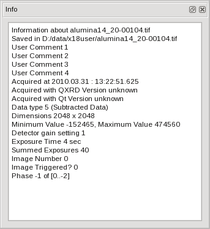 |
|
The 'Info' Dialog |
| 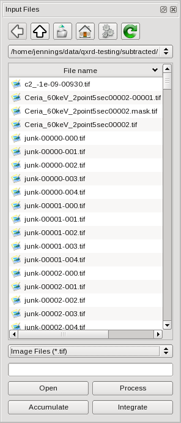 |
|
The 'Input Files' Browser |